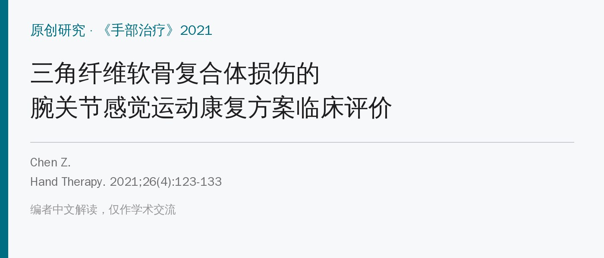
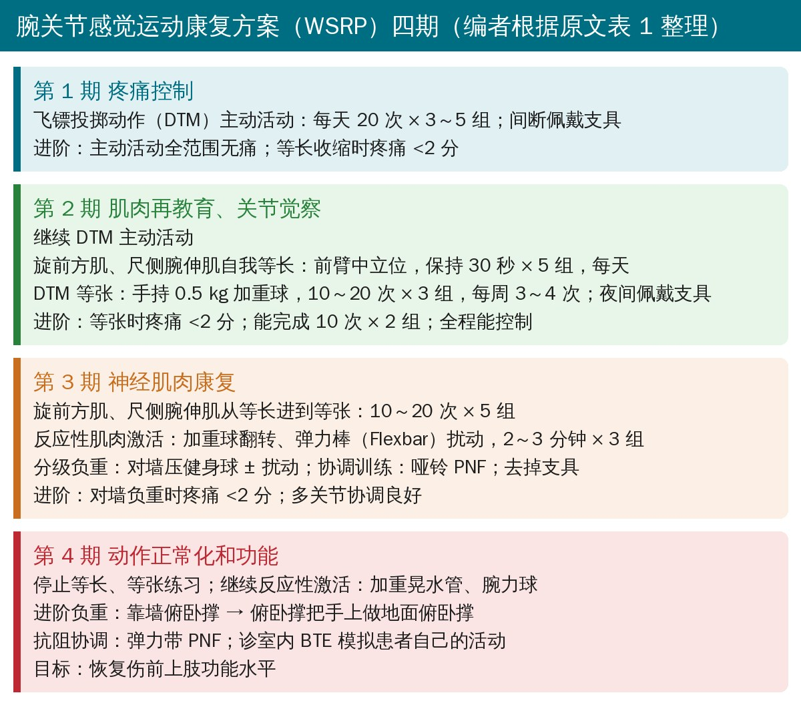
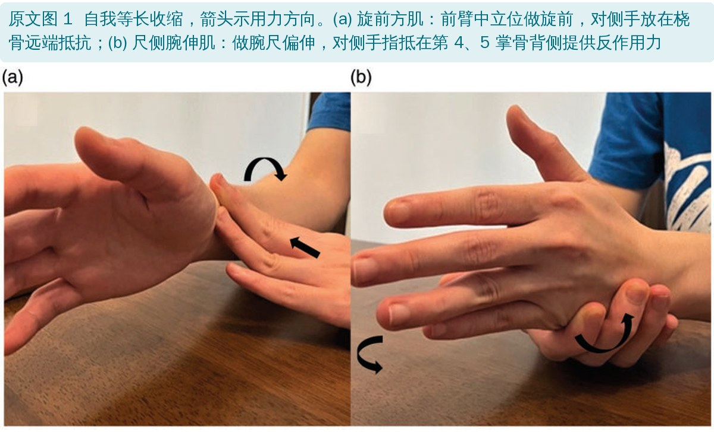
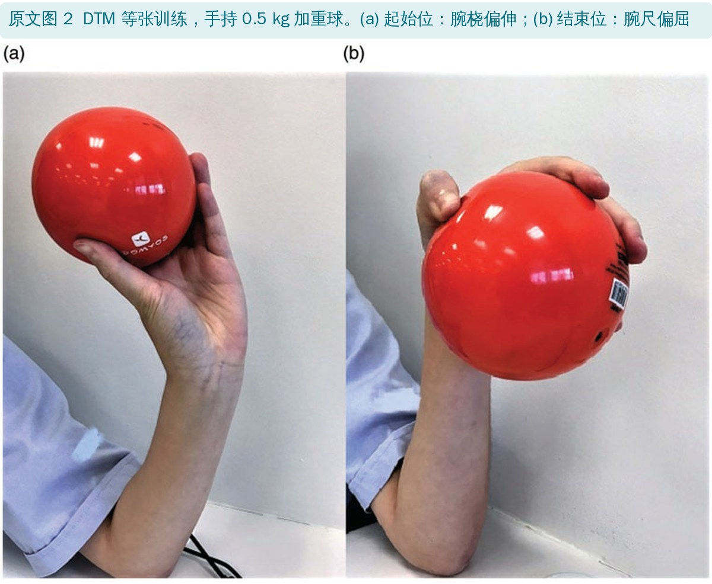
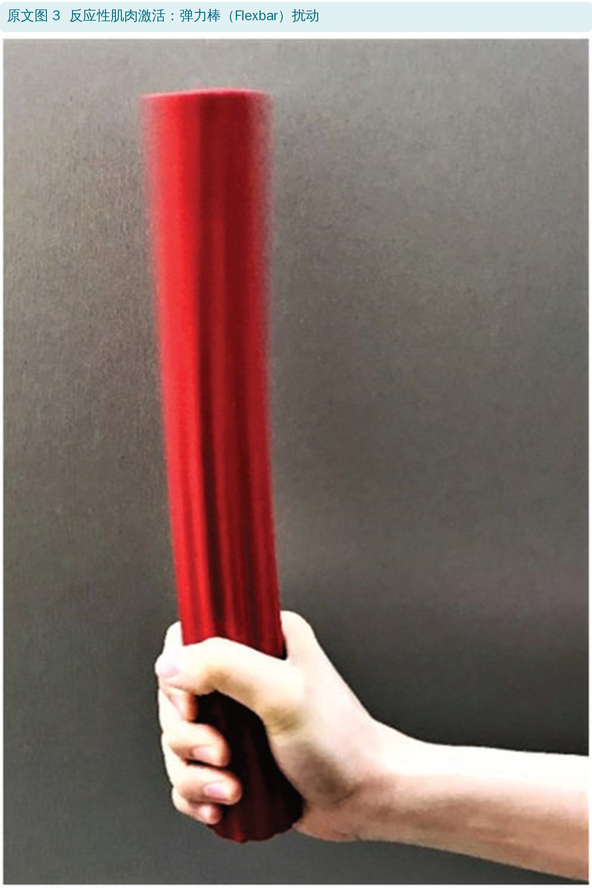
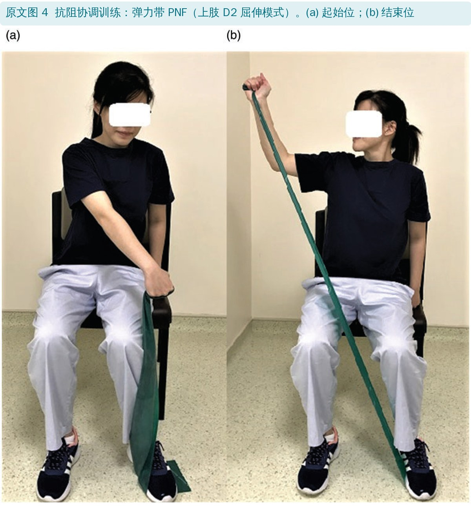
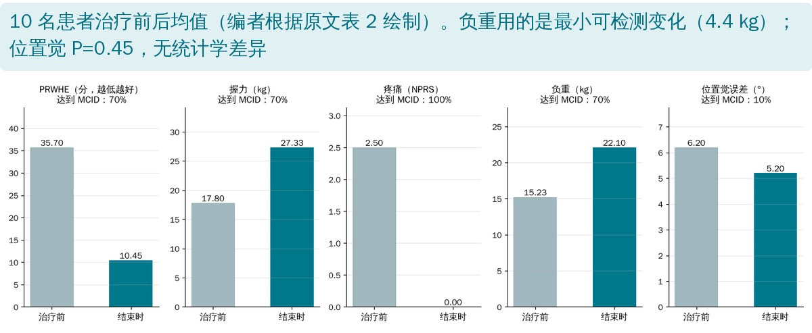

🔖原文信息（编者中文重排）
📚 文献信息
▪ Chen Z. Clinical evaluation of a wrist sensorimotor rehabilitation program for triangular fibrocartilage complex injuries. Hand Therapy. 2021;26(4):123-133. doi:10.1177/17589983211033313
▪ 作者单位：新加坡中央医院作业治疗部（手治疗门诊）
▪ 研究类型：单组前后对照研究，10 名非手术治疗的三角纤维软骨复合体（TFCC）损伤患者；没有对照组
TFCC 由背侧和掌侧桡尺韧带、关节盘、尺腕韧带、尺侧腕伸肌腱鞘下层和半月板同系物组成，稳定腕尺侧和下尺桡关节（DRUJ），还要缓冲从尺侧腕骨传来的压力。TFCC 损伤后负重能力至少下降 20%，常伴 DRUJ 不稳、尺侧腕痛、握力下降、不能撑。TFCC 神经支配丰富，损伤后腕本体感觉也会下降。
研究发现尺侧腕伸肌（ECU）和旋前方肌（PQ）是 DRUJ 的动态稳定肌：旋前方肌收缩时把尺骨头压进桡骨乙状切迹并向近端移，避免负重时尺骨头撞击腕骨；尺侧腕伸肌则抵抗尺骨头的异常移位。踝、肩的感觉运动训练已经很成熟，腕关节韧带损伤这方面近几年才受关注，疗效证据很少。作者在自己早期病例报告的基础上，整理出一套四期的腕关节感觉运动康复方案（WSRP），并加入了飞镖投掷动作（DTM）和 PNF。
• 对象：2018 年 5 月至 2020 年 1 月，手外科医生通过临床检查和 / 或磁共振诊断的 TFCC 损伤，转来做非手术康复；21～65 岁，伤后 1 年内；排除合并腕骨骨折或其他腕韧带损伤
• 临床检查包括尺骨小凹征（小凹压痛，文献报告敏感度 95%、特异度 86%）和 DRUJ 稳定性
• 13 人入组，10 人完成（2 人失访、1 人改做手术）；平均 33.5 岁，女性 60%，伤后平均 5.3 个月；其中 3 人因 DRUJ 不稳先戴 4～6 周前臂 Muenster 支具，再开始 WSRP
• 评估（由治疗师在开始和结束时测）：疼痛（NPRS，主动、被动加压、等长抗阻时）、握力（JAMAR 第 2 档，取 3 次均值）、腕关节位置觉（遮眼复现 20°、30° 伸腕）、负重（倒置 JAMAR 做“推离试验”）、腕功能（PRWHE 问卷）
• 把每个人的变化和最小临床重要差异（MCID）比较，并做配对 t 检验和 Cohen's d

🔖WSRP 四期（编者根据原文表 1 整理）
• 疼痛引导：训练中腕痛不能超过 NPRS 2 分
• 按标准进阶：每期都有明确的进阶条件；动作要平稳协调、近端没有代偿才进阶
• 每次复诊先查家庭练习：让患者演示，做得不对就不进阶；所有练习都在治疗师监督下做一遍，确保在家能做对
• 复诊间隔和总疗程由治疗师和患者商定；器材尽量用哑铃、加重球、弹力带等容易买到的东西
• 强化训练每周 3～4 次，两次之间至少休息 24 小时

🔖原文图 1：旋前方肌和尺侧腕伸肌的自我等长收缩
• 旋前方肌等长：前臂中立位，做旋前，对侧手放在桡骨远端抵抗
• 尺侧腕伸肌等长：做腕的尺偏伸，对侧手指抵在第 4、5 掌骨干背侧提供反作用力

🔖原文图 2：DTM 等张训练
飞镖投掷动作（DTM）：腕从桡偏伸到尺偏屈的斜面运动。生物力学研究显示腕的力学轴和肌肉止点都沿着这个平面排列，在这个平面活动最省力，日常活动中腕也主要在这个斜面上运动，所以早期就用 DTM 恢复活动、为功能做准备。

🔖原文图 3：弹力棒扰动

🔖原文图 4：弹力带 PNF
• 反应性肌肉激活：加重球翻转、弹力棒扰动、加重晃水管、腕力球，训练 DRUJ 稳定肌对突然扰动的反射性反应
• 分级负重：对墙压健身球（± 扰动）→ 靠墙俯卧撑 → 俯卧撑把手上做地面俯卧撑
• PNF：上肢 D2 屈伸对角线模式，把单独的 DTM 整合进整个上肢动力链；先用哑铃，后用弹力带
• BTE 模拟：在诊室用 Baltimore 治疗设备模拟患者自己要做的动作

🔖治疗前后均值（编者根据原文表 2 绘制）
• 完成方案的中位时间 109 天（四分位距 103 天，1 人受新冠封控影响）；没有不良事件
• 疼痛：100% 达到 MCID（2 分），结束时全部为 0 分
• 功能（PRWHE）、握力、负重：各 70% 达到 MCID / 最小可检测变化
• 位置觉：只有 10% 达到 MCID，前后无统计学差异（P = 0.45）
• 先戴支具 4～6 周的 3 人改善似乎更大
| 指标 | 治疗前 均值（SD） | 结束时 均值（SD） | 平均变化 | Cohen's d | P 值 | MCID / MDC | 达到 MCID 的比例 |
|---|---|---|---|---|---|---|---|
| PRWHE（分） | 35.70（14.07） | 10.45（6.34） | 25.25 | 2.47 | <0.001 | 14 | 70% |
| 握力（kg） | 17.80（8.01） | 27.33（6.15） | 9.53 | 1.35 | <0.001 | 6.5 | 70% |
| 疼痛（分） | 2.50（1.78） | 0.00（0） | 2.50 | 2.81 | <0.01 | 2 | 100% |
| 负重（kg） | 15.23（9.45） | 22.10（9.54） | 6.87 | 0.72 | <0.01 | 4.4（MDC） | 70% |
| 位置觉（°） | 6.20（2.74） | 5.20（2.44） | 1.00 | 0.39 | 0.45 | 7 | 10% |
原文表 2：治疗前后的平均结局（中文翻译）
PRWHE：患者自评腕手评估；MCID：最小临床重要差异；MDC：最小可检测变化。原表 MCID 一栏的数字后紧跟文献编号（如“1438”即 14 分、文献 38），此处已分开。
| 指标 | MCID / MDC | 支具组 平均变化 | 支具组 达到比例 | 无支具组 平均变化 | 无支具组 达到比例 |
|---|---|---|---|---|---|
| PRWHE（分） | 14 | 33.83 | 100% | 21.57 | 57.14% |
| 握力（kg） | 6.5 | 9.33 | 100% | 9.62 | 57.14% |
| 疼痛（分） | 2 | 4.67 | 100% | 2.14 | 100% |
| 负重（kg） | 4.4 | 6.33 | 66.67% | 7.10 | 71.43% |
| 位置觉（°） | 7 | 4.00 | 33.33% | 0.29 | 14.29% |
原文表 3：支具组（3 人）和无支具组（7 人）达到 MCID 的比例（中文翻译）
• 没有对照组：TFCC 损伤有一定自然恢复，休息和常规力量训练也会改善；作者引用文献说伤后 3 个月以上自然恢复不太可能，但这不能代替对照
• 样本只有 10 人，而且疗程长短不一、复诊频率不固定、家庭练习依从性没有正式记录（患者自述每周至少 3 次）
• 诊断不精确：没做腕关节镜（金标准），不知道具体损伤类型，也就没法按类型分析
• 评估者就是治疗师：结局由治疗患者的治疗师测，没有设盲
• 位置觉测量本身不可靠：作者也承认量角器测位置觉的重测信度差，而且借用的是腕骨折人群的 MCID
• 优点：方案分期清楚、进阶标准量化、器材简单，作为临床参考很实用
• 疼痛“100% 达到 MCID”不可能成立：MCID 是 2 分，治疗前疼痛均值 2.50、标准差 1.78，必然有人治疗前就不到 2 分，结束时降到 0 也达不到 2 分的改善
• 表 2 和表 3 的疼痛数据对不上：按表 3，支具组 3 人平均降 4.67 分、无支具组 7 人平均降 2.14 分，合起来应是 (3 × 4.67 + 7 × 2.14) ÷ 10 ≈ 2.90，表 2 却是 2.50。其余三项（功能、握力、负重）按同样方法都能对上
• 位置觉的数据也对不上：按表 3 合并，平均改善应为 1.40°（表 2 是 1.00°）；达到 MCID 的人数是 3 人中 1 人 + 7 人中 1 人 = 2 人，即 20%，表 2 写 10%
• 疼痛的效应量算不出来：其他指标的 Cohen's d 与“均值差 ÷ 前后合并标准差”基本吻合，按这个方法疼痛应约 2.0，表中写 2.81
• 位置觉的 MCID 几乎不可能达到：治疗前平均误差只有 6.2°，而 MCID 要求改善 7°
• 假设没有成立，正文却没说：研究假设“≥50% 的患者在所有指标上都达到 MCID”，位置觉只有 10%（或 20%），假设实际上没有成立
• 进阶标准和训练限制不一致：训练中允许疼痛“不超过 2 分”，进阶标准却是“疼痛 <2 分”
• 文献引用错位：引言说 TFCC“协助腕骨和尺骨之间传递负荷（文献 4、5）”，但文献 4 是腕骨折位置觉研究、文献 5 是推离试验的研究，后文也分别这样引用
• 负重的“MCID”其实是 MDC：摘要说 70% 的人负重达到 MCID，但正文用的是最小可检测变化（4.4 kg），两者概念不同
• 效应量被说成“临床效应”：Cohen's d 只反映统计效应大小，不等于临床意义
• TFCC 保守治疗别只做腕屈伸：重点激活旋前方肌和尺侧腕伸肌，这两块是下尺桡关节的动态稳定肌
• 早期用飞镖投掷动作：从桡偏伸到尺偏屈的斜面运动最省力、最贴近日常，先主动，再用 0.5 kg 加重球
• 疼痛不超过 2 分，按标准进阶，每次复诊检查家庭练习动作
• 后期加入扰动和负重：弹力棒、加重球翻转、晃水管、腕力球；对墙压球 → 靠墙俯卧撑 → 地面俯卧撑
• 最后整合全上肢：PNF D2 模式和模拟日常动作，让腕在动力链里工作
• 有 DRUJ 不稳的，按医生建议先戴 4～6 周支具，再开始系统康复
• 运动员和重体力劳动者完成方案后，可能还需要专项运动康复或工作强化训练
欢迎关注骨科康复小黄公众号，获取更多物理治疗的专业知识！
📄参考文献：
Chen Z. Clinical evaluation of a wrist sensorimotor rehabilitation program for triangular fibrocartilage complex injuries. Hand Therapy. 2021;26(4):123-133. doi:10.1177/17589983211033313
原文版权归作者所有（© The Author(s) 2021），由 SAGE 出版，未标注开放许可协议。本文为学术交流用的中文解读：原文图 1～4 引自原文并加中文图注，表 1～3 为中文翻译或整理，结果图为编者根据原文数据绘制。如有侵权请联系删除。